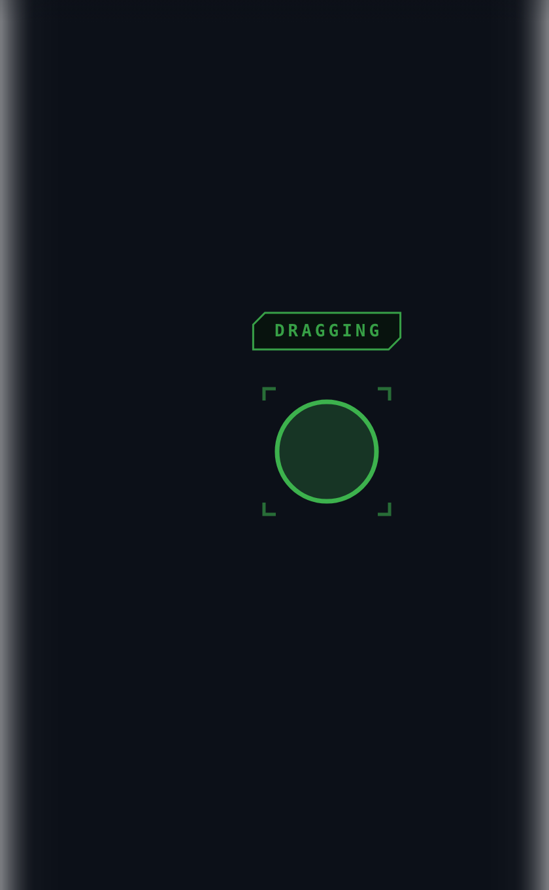

Press and hold
Dragging without a button
Rest one finger; a ring charges around it; when it fills the button is held. Slide to select, lift to release.
The signal is drawn where your hand isn't — the screen edges bloom white — because your eyes are on the other screen.